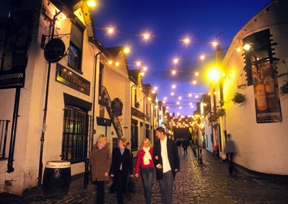

| Transportation and Visa Information |  | |
| Visa Information | ||
| A valid passport is required for entry into the United Kingdom. Please consult the British Consulate nearest to you for specific details and visa requirements or visit www.ukvisas.gov.uk for further information. | ||
| Air Travel | ||
A number of airlines fly direct to Glasgow from European and international destinations. There are a number of airlines that now offer discounted fares and you should visit the website of your preferred airline. Alternatively you may wish to book with your travel agent. www.britishairways.com | ||
| | ||
| Car Hire | ||
There are a number of car hire companies from which you can hire a car for your stay in Glasgow. Please note that a full driving licence is required and you must have been in possession of your licence for a minimum of a year. www.avis.com | ||
| Taxis | ||
| You can pick up a cab at the airport to the City Centre. Glasgow Airport operate a taxi system and a taxi from the Airport should cost approximately £17.00 - £18.00 sterling ($27.20 - $28.80; Euro22.10 – Euro23.40). However, you can pre-book a taxi through Airport Taxis and the cost of the taxi will be £15.00 - £16.00 sterling ($24.00 - $25.60; Euro19.50 – Euro20.80). To pre-book the taxi please call +44 141 848 4900. Alternatively please use any Glasgow Airport Courtesy phone and call 4900 to arrange a taxi. You can also book a TOA taxi in advance, which should cost approximately £18.00 sterling ($27.00; Euro24.00). If you pre-book a taxi with TOA you should go to the Taxi Pick-Up point which is parallel to the Glasgow Airport Taxi rank. The telephone number for TOA is +44 (0)141 429 7070. Access Airport Taxi Services (Glasgow Airport) online: http://www.airporttaxiservices.com. | ||
| Bus | ||
| There is a regular bus service, which runs from Glasgow Airport to the City Centre. The service runs from 0600 – 0000 hrs, every 15 minutes. The journey time is approximately 25 minutes and the cost for a single journey per person is approximately £3.50 ($5.25; Euro4.55). Please visit www.spt.co.uk for further information. | ||
| Train | ||
| If you wish to take a train to the City Centre you must either take a bus or taxi to Paisley Gilmour Street Station. There is a shuttle bus which travels between Glasgow Airport and Paisley Gilmour Street and operates every 15 minutes. It will take approximately 5-10 minutes from the airport to the station. The approximate cost of the bus is £0.90 Sterling ($1.35; Euro1.20). The train from Paisley Gilmour Street to Glasgow Central Station costs approximately £2.00 Sterling ($3.00; Euro2.60). The journey time is 12 minutes and trains run approximately every 10 minutes. Please visit www.scotrail.co.uk or www.spt.co.uk for further information | ||
| Driving in UK as a Visitor | ||
Depending on which country you are visiting from there are some restrictions on the size of vehicle you can drive and also the length of time your licence is valid. Please visit the DVLA where you will find further information. It should be noted that driving under the influence of either illegal drugs or alcohol is an offence in the UK. Please note that there are heavy penalties in Britain for driving while under the influence of drugs or alcohol. You are strongly advised not to drink and drive. Please also note that wearing seat belts in the front and back seats is compulsory. There are spot fines if stopped by the Police for this offence. | ||